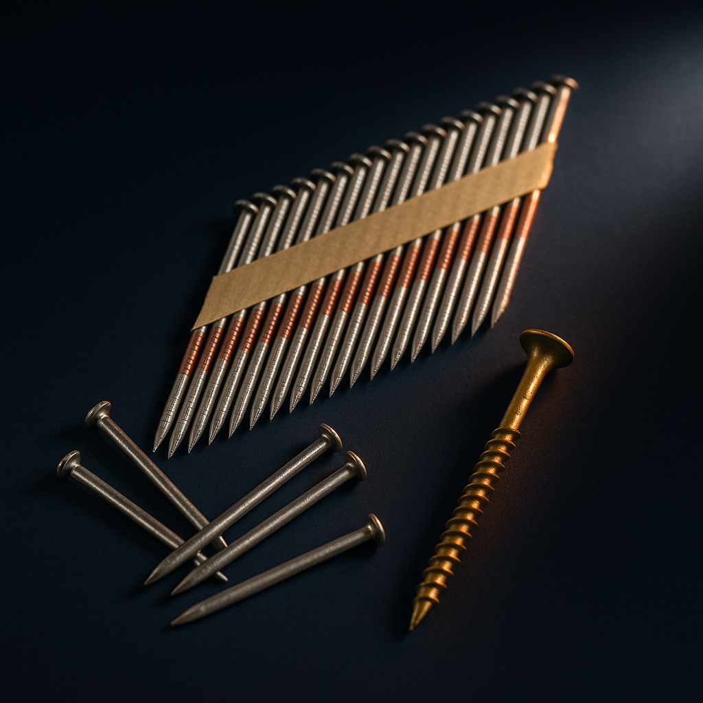

BPIR — Bolts (range)
BPIR
BPIR
— Bolts (range)
Building Product Information Requirements declaration for Bolts (range).


Issued under Section 362T of the Building Act 2004 and the Building (Building Product Information Requirements) Regulations 2022. Document reference KNF-BPIR-BO-2026-05 · v1.0.
| NZ legal entity | Kiwi Nails Fasteners Ltd |
|---|---|
| NZBN | [to be inserted before issue] |
| Manufacturing | Kiwi Nails-owned and operated fastener manufacturing line — ISO 9001 certified |
| NZ storage & distribution | 6B Lorien Place, East Tamaki, Auckland 2013, New Zealand |
| Contact | info@kiwinails.co.nz · 09 274 8588 |
| Authorised representative | Linda Kong, Director |
Bolt range — engineering bolts (hex head + matching nut), coach bolts (cup head + square shoulder), coach screws (hex head lag screws), screw bolts (concrete anchors) and through bolts (expansion-sleeve anchors).
SKU examples: EB, CB, CS, SB, TB series SKUs
| ISO 9001 | Manufacturing line operates under ISO 9001 certified quality management — raw material inspection, galvanising, dimensional tolerance and packaging all documented. |
|---|---|
| BRANZ / product control | Manufactured under ISO 9001 quality management — tensile strength and zinc coating controlled at every consignment. |
| GS1 New Zealand | Every pack carries a unique GS1-NZ-registered EAN-13 barcode (prefix 9420052). |
HD Galvanised (AS/NZS 4680) · Zinc-plated
| B1 Structure | Used in structural timber-to-timber and timber-to-concrete connections per NZS 3604 §2.4 and AS 1252. |
|---|---|
| B2 Durability | HD galv coating provides 50-year minimum durability per E2/AS1 Table 20. |
| F2 Hazardous materials | Contains no lead, no cadmium, no asbestos. RoHS compliant. |
Two-year replacement warranty on manufacturing defects. Warranty does not cover damage caused by incorrect installation, use outside the appraisal scope, or exposure conditions beyond the durability zone of the material grade selected.
I, the undersigned, declare on behalf of Kiwi Nails Fasteners Ltd that the information contained in this Building Product Information Requirements declaration is accurate to the best of my knowledge as at the date of signing, and that the products described are supplied with the certifications, materials and warranties set out above.